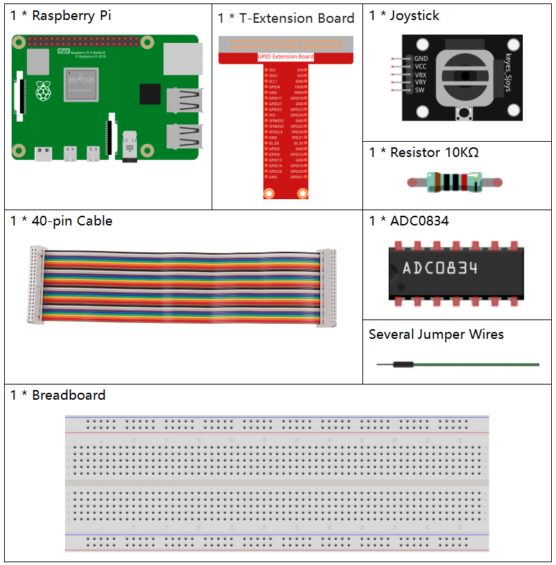
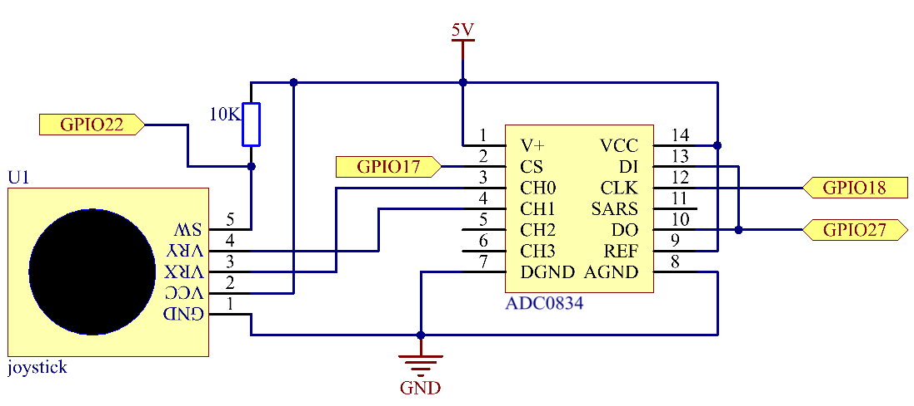
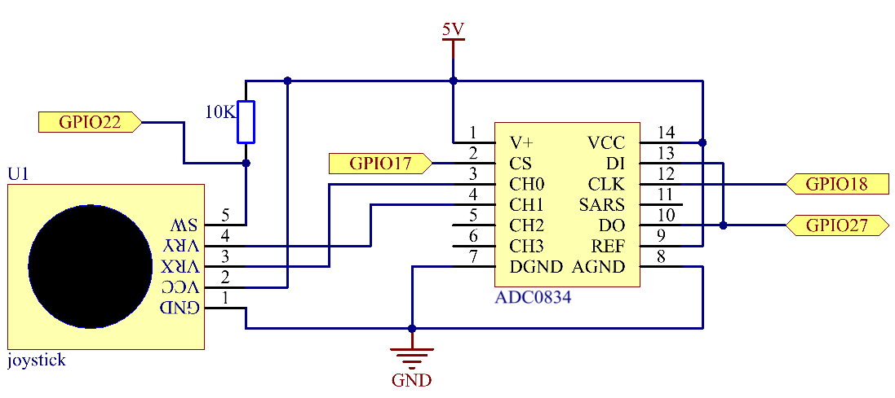
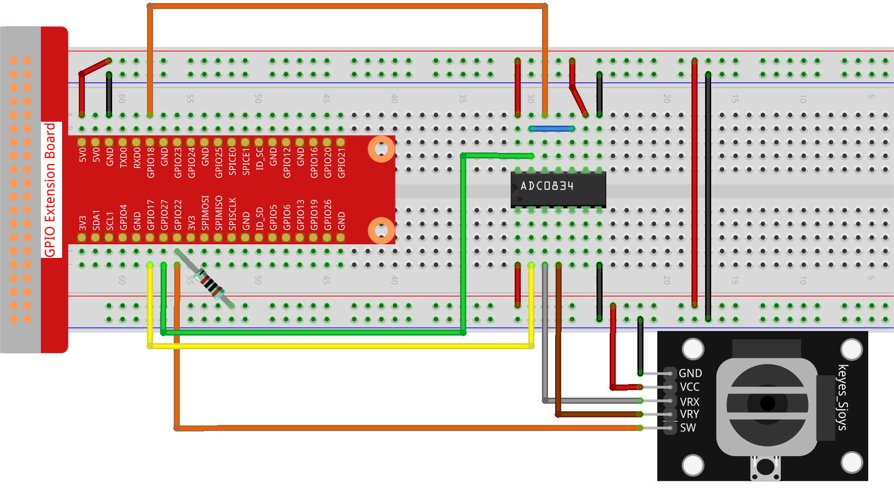

注釈
こんにちは、SunFounderのRaspberry Pi & Arduino & ESP32愛好家コミュニティへようこそ！Facebook上でRaspberry Pi、Arduino、ESP32についてもっと深く掘り下げ、他の愛好家と交流しましょう。
参加する理由は？
エキスパートサポート：コミュニティやチームの助けを借りて、販売後の問題や技術的な課題を解決します。
学び＆共有：ヒントやチュートリアルを交換してスキルを向上させましょう。
独占的なプレビュー：新製品の発表や先行プレビューに早期アクセスしましょう。
特別割引：最新製品の独占割引をお楽しみください。
祭りのプロモーションとギフト：ギフトや祝日のプロモーションに参加しましょう。
👉 私たちと一緒に探索し、創造する準備はできていますか？[ここ]をクリックして今すぐ参加しましょう！
2.1.6 ジョイスティック
はじめに
このプロジェクトでは、ジョイスティックの動作を学びます。ジョイスティックを操作し、その結果を画面に表示します。
必要なコンポーネント
このプロジェクトでは、以下のコンポーネントが必要です。
回路図
ジョイスティックのデータを読み取る際、軸ごとにいくつかの違いがあります。X軸およびY軸のデータはアナログで、アナログ値をデジタル値に変換するにはADC0834を使用する必要があります。Z軸のデータはデジタルですので、GPIOを直接読み取ることもできますし、ADCを使用しても読み取ることができます。
 

実験手順
ステップ 1: 回路を組み立てます。
ステップ 2: コードのフォルダに移動します。
cd ~/davinci-kit-for-raspberry-pi/python-pi5
ステップ 3: 実行します。
sudo python3 2.1.6_Joystick.py
コードを実行した後、ジョイスティックを動かし、対応するx、y、Btnの値が画面に表示されます。
警告
エラー メッセージ RuntimeError: Cannot determine SOC peripheral base address が表示された場合は、 「gpiozero」が動作しない場合。 を参照してください。
コード
注釈
以下のコードを 変更/リセット/コピー/実行/停止 することができます。ただし、その前に davinci-kit-for-raspberry-pi/python-pi5 のソースコードパスに移動する必要があります。コードを変更した後、効果を確認するために直接実行できます。
#!/usr/bin/env python3
from gpiozero import Button
import ADC0834
import time
# GPIOピン22に接続されたボタンを初期化
BtnPin = Button(22)
# ADC0834 ADCのセットアップ
ADC0834.setup()
try:
# ADC値とボタンの状態を読み取り、表示するメインループ
while True:
# ADCチャンネル0と1からXとYの値を読み取ります
x_val = ADC0834.getResult(0)
y_val = ADC0834.getResult(1)
# ボタンの状態（押されているかどうか）を読み取ります
Btn_val = BtnPin.value
# X、Y、およびボタンの値を表示します
print('X: %d Y: %d Btn: %d' % (x_val, y_val, Btn_val))
# 次の読み取り前に0.2秒の遅延
time.sleep(0.2)
# スクリプトの正常な終了を確実に処理します（たとえば、キーボード割り込みを介して）
except KeyboardInterrupt:
pass
コードの説明
このセクションでは、
gpiozeroライブラリからButtonクラスをインポートして、GPIOピンに接続されたボタンを管理します。また、ADC0834 ADC（アナログ-デジタルコンバータ）モジュールとのインタフェースのためにADC0834ライブラリもインポートします。#!/usr/bin/env python3 from gpiozero import Button import ADC0834 import time
GPIOピン22に接続されたボタンを初期化し、ADC0834モジュールを使用するためのセットアップを行います。
# GPIOピン22に接続されたボタンを初期化 BtnPin = Button(22) # ADC0834 ADCのセットアップ ADC0834.setup()
ジョイスティックのVRXおよびVRY接続はそれぞれADC0834のCH0およびCH1に接続されています。これにより、CH0およびCH1から値を読み取ることが容易になり、それらの値は
x_valおよびy_val変数に保存されます。さらに、ジョイスティックのSW値が読み取られ、Btn_val変数に割り当てられます。取得したx_val、y_val、およびBtn_valの値は、print()関数を使用して表示されます。try: # ADC値とボタンの状態を読み取り、表示するメインループ while True: # ADCチャンネル0と1からXとYの値を読み取ります x_val = ADC0834.getResult(0) y_val = ADC0834.getResult(1) # ボタンの状態（押されているかどうか）を読み取ります Btn_val = BtnPin.value # X、Y、およびボタンの値を表示します print('X: %d Y: %d Btn: %d' % (x_val, y_val, Btn_val)) # 次の読み取り前に0.2秒の遅延 time.sleep(0.2) # スクリプトの正常な終了を確実に処理します（たとえば、キーボード割り込みを介して） except KeyboardInterrupt: pass